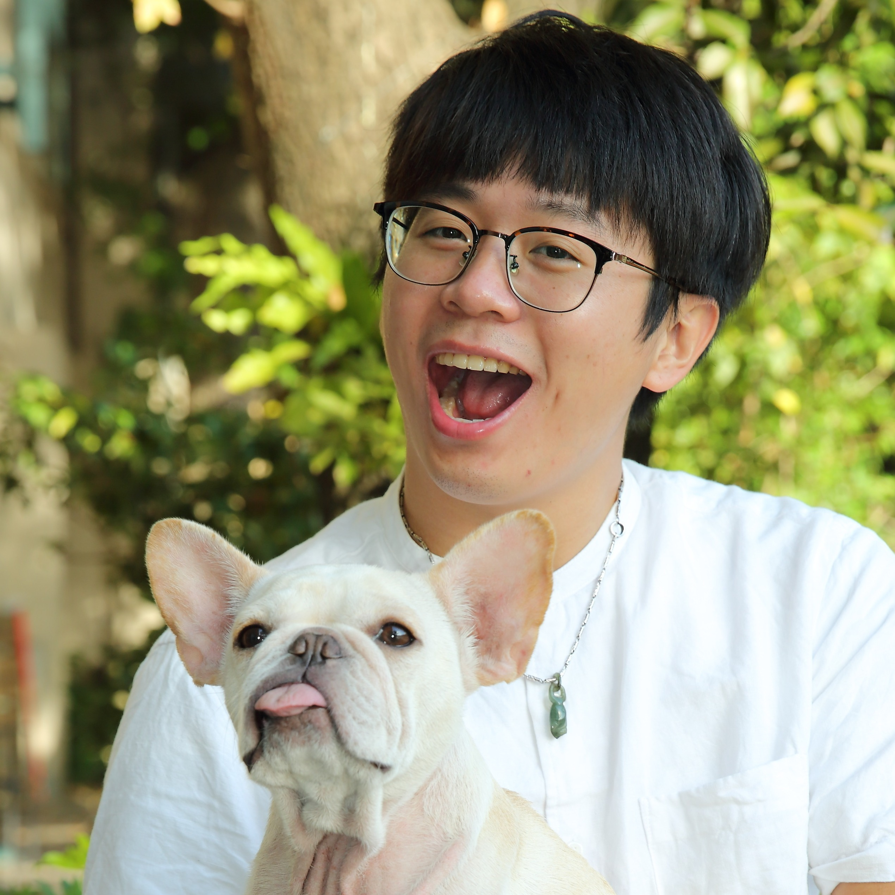

陳彥宏_08/02
每月一次 週三 19:30-21:00
許宭銣_09/06
1. 面對創業失敗賠了300萬的我
2. 得知患有乳癌同時面對雙親逝世，獨自面對乳癌人生的我
3. 現在作為 阿德勒－勇氣催化者的我
怡臻_11/01
王雅玲_12/06
Bú-gí io-kiáⁿ bô kán-tan, ka-chài, ū Adler tàu-saⁿ-kāng.
1. 分享個人共母語講轉來的故事，母語育囝的心情。
2. 育囝過程和Adler的緣份，運用Adler的智慧來自我成長。
3. 按怎用「溫和堅定」的態度佮信念來推廣本土語。
高培哲_01/11
情緒是每個人無時無刻都在面對的事物，如何與情緒相處，更是困擾許多人的課題。在這堂課，我們一起看看阿德勒怎麼談情緒，並且運用正念以及澄心的技巧，學習和情緒同在。
1.阿德勒對於情緒的看法
2.正念和澄心對情緒的看法
3.實際操作練習
曹明哲_02/01
1.五斗米與阿德勒
-在景氣波動與物質生活中的自卑與超越。
2.被討厭的勇氣？討人厭的底氣？
-工作、人際與親密下的生命風格。
3.北風與太陽比賽中的自我成長
-樸實不虛幻的動態虛構目標。
趙介亭(綠豆爸)
_03/01
綠豆爸在2014年，成立了以阿德勒心理學為核心的非學校型態實驗教育團體，長期推動以「鼓勵、勇氣、能力、連結、貢獻」做為教育的目標，和大家分享八年來的教育實驗，讓你在家也能阿德勒。
葉羽超_04/12
在我工作的場域，總是充斥著一群氣餒的孩子，尤其是自閉症的大孩子，他們的氣餒，展現在生活的各個角落，來和您一同分享當中的酸甜苦辣
陳韋寧_05/03
1.班級會議應用實例
2.家庭會議分享
美恩_06/07
外界對我的評價，大多是勇敢、充滿冒險精神; 不論是大學畢業後在歐洲沙發衝浪一整年、在競爭激烈的倫敦從事時尚攝影工作、去墨西哥洞穴潛水，或是38歲才開始學跳爵士舞...。
學了阿德勒之後，我才慢慢明白，我內心深處的動力，和阿德勒提倡的思維很有關：我們所表現出來的狀態，並非完全與我們的過去有關，而是和我們賦予過去的經歷，什麼樣的詮釋與意義有關。
今年2月，我前往墨西哥從事洞穴潛水，這是我20歲那年許下的願望，歷經18年才開花結果。回首看這18年的心路歷程，我看到目標、看到勇氣、看到信任、看到美好人際關係帶給我的鼓勵與動力...期待能有這個機會，跟你分享這美妙的心路歷程。
簡麗玲_07/05
◼課程目標：
1.分享阿德勒教養的三項重要概念
2.簡介療心卡的內容
3.帶領參加者學習結合兩者在親子互動上
◼進行方式：採用直接體驗的方式，帶領參加者在阿德勒的理論基礎下，實際學習運用療心卡進行親子互動的活動
◼課程對象：一般大眾(推薦父母親一起或親子共同參與)
◼所需媒材：療心卡(很推薦自備療心卡，若沒有請準備其他正向卡，如：fun心福卡、熊讚卡、改變卡、彩虹卡、漣漪卡等)